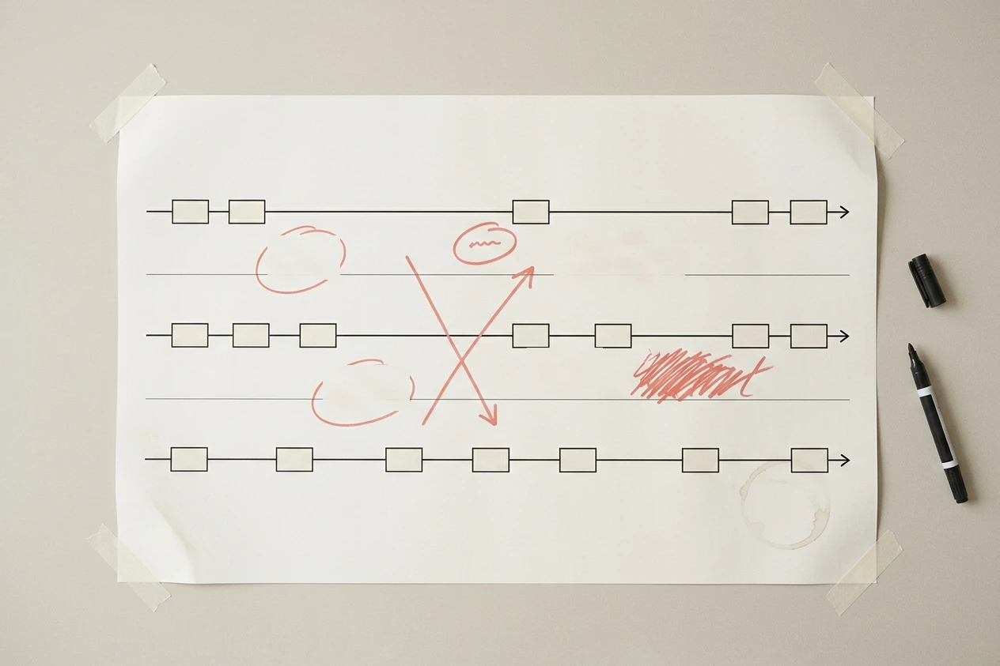
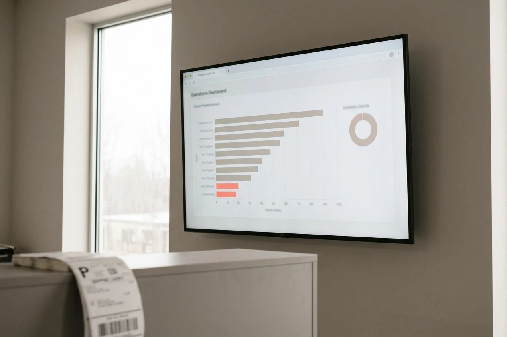
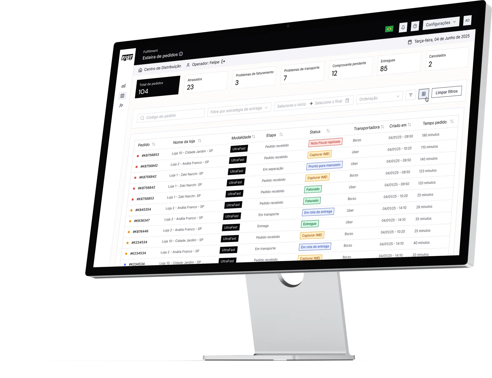
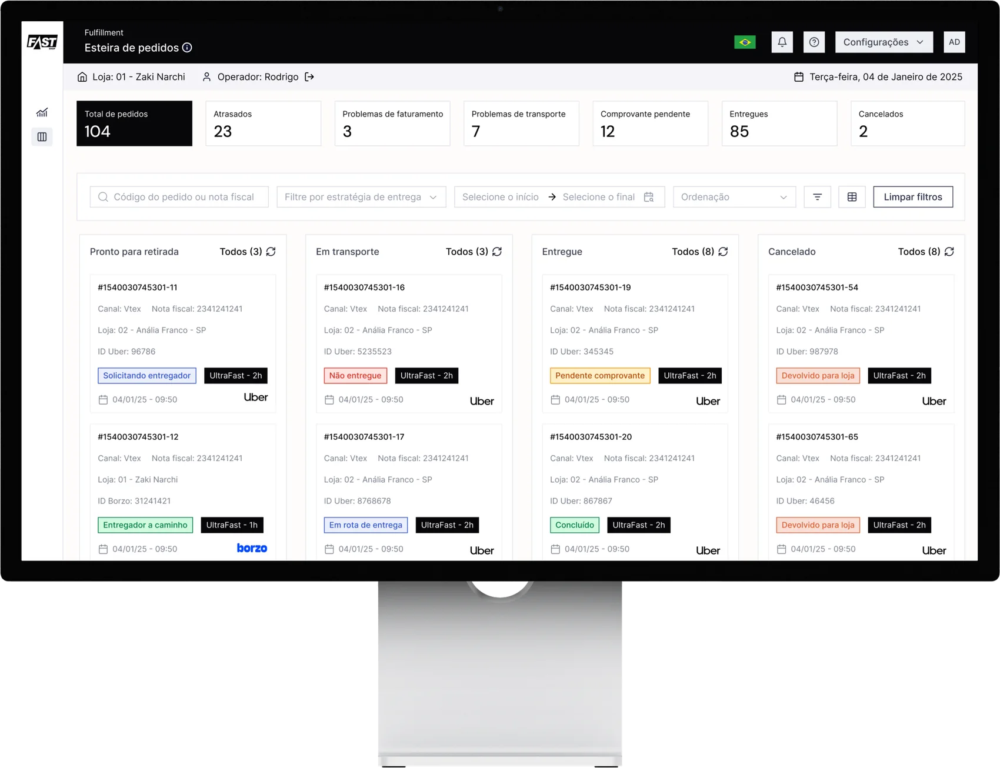
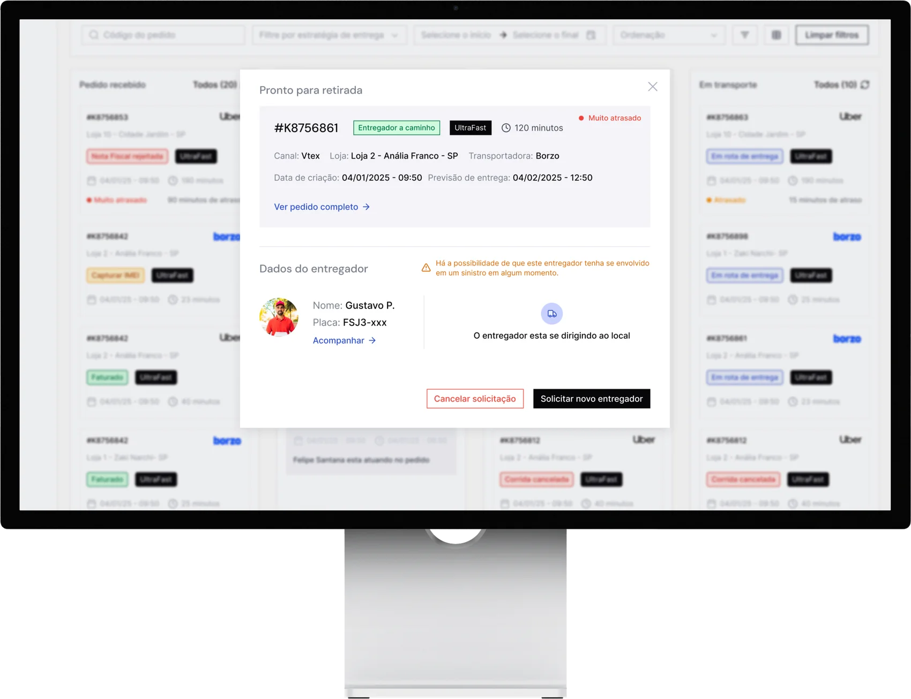
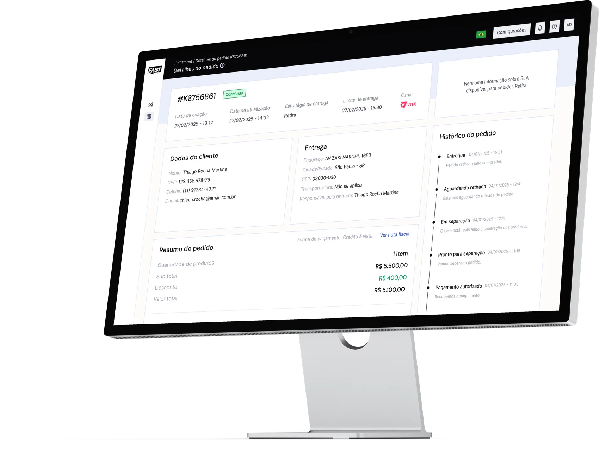
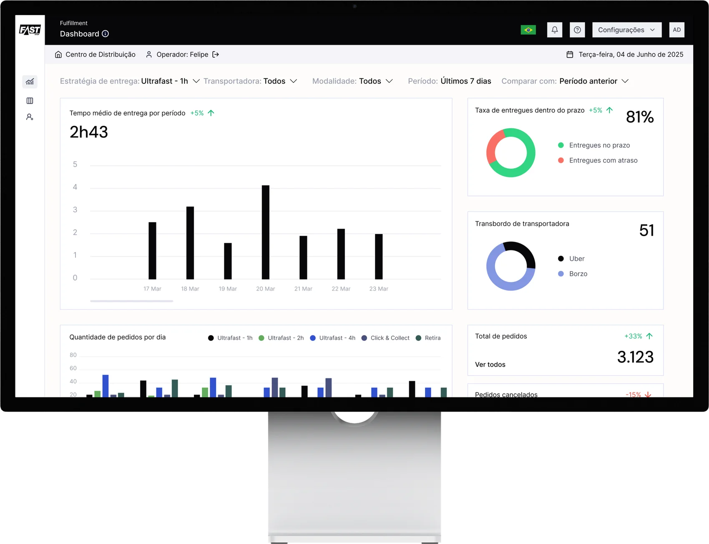

- Problem
- Getting a product from a store shelf to a customer ran on phone calls and spreadsheets, while checkout was promising two-hour delivery.
- What I did
- Designed Pick & Pack around three roles at once: store, distribution centre and driver. Then validated it by rolling out store by store, reading what the operation already recorded.
- Outcome
- Real-time order visibility across 80+ stores and 22,000+ SKUs, with the exception paths, not just the happy path, designed for.
Fast Shop is one of Brazil's top electronics retailers, with 80+ stores and 22,000+ SKUs. Before Kruzer, getting a product from a store shelf into a customer's hands involved phone calls, spreadsheets, and a lot of guessing about where an order actually was. My job was to design the system that replaced all of that: Pick & Pack, a platform that tracks every order in real time, from the moment it's placed to the moment it's delivered, in as little as two hours.
01 · The painThe problem wasn't just software. It was three different people
A single order touches at least three roles: someone in the store who has to find and pack the product, someone at the distribution center routing it to the right courier, and a driver who has to actually get it there. Each of them needs different information at different moments, and if any one of them is confused, the order slips. Most fulfillment tools are built around one of these perspectives and force the other two to adapt. I designed Pick & Pack around all three from day one.
The pointer: the promise on the checkout page
Fast Shop sells two-hour delivery. That promise is made at checkout, before anyone in a store knows an order exists, and it is the reason the platform was funded at all. Every order that misses it costs twice. Once in the delivery, once in the customer who stops believing the badge next time.
So the pointer wasn’t “a better fulfillment UI.” It was on-time rate and the time an operator spends finding out an order is in trouble. Those two are the same number seen from different ends: an operation only hits its SLA if the exceptions surface early enough to be fixed, and 81% on time is a statement about the other 19% being findable.
81% on time is a statement about the other 19% being findable.
03 · The questionsThe questions I took to the operation before drawing a screen
Fast Shop’s operations people had run this process for years without software. Treating them as stakeholders to be informed, rather than as the source of the requirements, would have produced a beautiful tool for a process that doesn’t exist.
-
Where does an order actually stop?
Not in theory. I asked for the real stalls: waiting for a courier, product not on the shelf where the system says it is, a customer who isn’t home. The stall list is the requirements list.
-
Who is accountable when it slips, and what do they need to see?
Store, distribution centre and driver each own a different slice of the same order. Establishing who gets blamed for a late delivery is what tells you whose screen has to raise the alarm.
-
What does the store do today when a delivery fails?
The answer was uncomfortable and useful: nothing consistent. That gap is where “returning to store” came from later, and I only found it by asking about the ugly path instead of the happy one.
-
What can we not change?
Carrier integrations, fiscal documents and store staffing were fixed. Knowing the immovable parts early is what keeps a design from being an argument the operation will always win.
The stall list is the requirements list. I got it by asking about the ugly path, not the happy one.

Three people, three jobs, one order
The store operator is hiring this to clear their queue before the courier arrives. The distribution-centre operator is hiring it to know which orders are about to breach and route around it. The driver is hiring it to get an unambiguous next stop. Same order, three different definitions of “done.”
Most fulfillment tools pick one of those jobs and make the other two adapt. Holding all three at once is what forced the interface decisions in this case: what goes first in a table, what earns an alert, and what is allowed to be one click.
Same order, three people, three different definitions of “done.”
05 · The betDesigning for the warehouse floor, not the mockup
Enterprise fulfillment is unforgiving of designers who work from assumptions: the person using this all day knows things you don't. So the process was built around getting close to the actual operation and correcting fast when I was wrong.
How I checked, when you can’t split traffic in a warehouse
You can’t A/B test an operation. You cannot give half the pickers a different queue and let a real customer’s delivery be the control group, and no operations director would sign it if you could. The experiment unit here isn’t a user, it’s a store.
So validation ran in three layers. Flows were walked through with operators against the real process before build. Releases went to a small set of stores first, where the operation could absorb being wrong. And the platform’s own operational data closed the loop: on-time rate, where orders sat and for how long, which statuses piled up. In logistics the product already records what it does, so you don’t need a survey to see a queue backing up.
The qualitative and the quantitative caught different things, deliberately. Operators told me the pipeline view didn’t match how they thought about their day. The data told me how many orders were failing delivery with no defined next step. Neither finding would have surfaced through the other channel.
The experiment unit here isn’t a user. It’s a store.
The round that rebuilt the pipeline view
I couldn’t pull store operators off the floor for a lab session, so the round happened where the work is. At the counter, on their machine, with real orders in front of them. They walked their actual day instead of a task I had written.
That the pipeline should mirror the order’s lifecycle, because that is how the system thinks about an order.
Operators don’t think in lifecycles. They think in what is about to hurt them: what leaves in the next hour, what is already late, what has nowhere to go. The first version made them translate.
So the board was rebuilt around their sequence rather than the system’s. The “returning to store” column exists because that walkthrough exposed a whole class of orders that failed delivery and had no defined next step. The operators had a workaround for it but no name, which is why it had never been requested. The data afterwards told us how big the class was.

My role
Senior product designer owning Pick & Pack, the Compass design system, PIM, and DevTools end to end, from research and flows through UI and design-system governance.
The team
Worked with product management, Fast Shop's operations stakeholders as domain experts, and the engineering teams building each product on the shared platform.

"81% delivered on time" only means something if the other 19% are easy to find and fix.
The queue view above is where operators live most of the day. It had to answer "what needs my attention right now" in under a second, which is why status, delay, and carrier are the first three things your eye hits, before the order number even matters.
A pipeline you can see, not just a list you can search
For store operators managing dozens of orders in different stages at once, a flat table wasn't enough. They needed to see the shape of their day. I designed a kanban view that mirrors how an order actually moves: ready for pickup, in transit, delivered, or cancelled, including a status we added later, "returning to store," for the failed-delivery cases that used to get lost entirely.

Where the first version was wrong
The kanban above isn't the one I shipped first. The initial pipeline view didn't match how operators actually think about their day, so I reworked it against their real mental model instead of patching around the mismatch. "Returning to Store" didn't exist in that first version either: it went in once the data showed how many failed deliveries were quietly stalling with no next step for anyone to act on.
Getting the first version wrong wasn't the risk. Shipping it small enough to find out fast, and rebuilding instead of defending it, was the point.
When something goes wrong, don't make the operator dig for it
Delays and driver issues are where fulfillment tools tend to fall apart. The information that matters (is this driver reliable? how late is this, really? what are my options?) is usually buried three clicks deep. I designed the driver-assignment flow to surface risk before it becomes a problem: if a courier has a history of incidents, that flag shows up right where the operator is about to make a decision, not after.

Every order can become a customer service conversation
When a customer calls about their order, the person answering needs the full story in seconds: SLA countdown, delivery address, order history, and a place to log what was said, without switching tools. The order detail view brings all of that together, including a live countdown against the SLA so operators know exactly how much runway they have before an order is officially late.

The system underneath it
Rolling it out store by store, and what that surfaced
Fulfillment software fails in production in ways it never fails in a demo, so the release wasn’t a date, it was a sequence. A small set of stores went first, close enough to the team that a problem could be watched instead of reported, and each wave carried what the previous one had taught.
The exceptions did most of the teaching. A courier arriving before an order was packed. Orders scanned out of sequence. A delivery that failed with the address still marked valid. Each one became either an interface state or a rule, and I stayed with engineering through those waves, because the difference between an operator trusting the screen and working around it is usually one unhandled case.
The difference between an operator trusting the screen and working around it is usually one unhandled case.
09 · Into productionThe results, at a glance
Three months after rollout, on-time delivery was still 81% — on a larger order volume than the operation had ever handled. That is the whole claim, and it is worth stating carefully: the rate did not go up. It refused to go down while the load went up, which in fulfillment is the harder of the two. Operators also had, for the first time, a single dashboard for delivery time, carrier performance and cancellations, without exporting anything to a spreadsheet.

How we measured it
Logistics has one advantage: the product generates its own evidence, so the measurement didn’t depend on anyone volunteering an opinion.
- Headline On-time delivery against the two-hour promise, which held at 81% while order volume grew.
- Operational Where orders sat and for how long, by status and by store. A rate tells you there is a problem; this is what tells you where to go.
- Adoption Whether operators worked in the platform or around it. Spreadsheet exports dropping is a blunt signal, but an honest one.
How it was measured: on-time delivery is the platform's own figure, calculated against the two-hour promise made at checkout and read three months after rollout, while order volume was still growing. Status dwell time comes from the same operational data, per store and per status.
The argument I had to win
Designing for three roles at once costs more than designing for one, and it has to be argued for before anyone has seen a screen. The argument landed because of the map, not because of me: once the points where information falls between store, distribution centre and driver were visible on a single page, nobody proposed picking a primary user again. Before that map existed, “design it for the store operator and the rest will adapt” was a perfectly reasonable position.
What I’d do differently
I would have gone to the floor before drawing the first pipeline view, not after it fell short. The rework was cheap because it happened early, but it was avoidable: I built the first version from the system’s model of an order because that was the model I had access to, and I mistook availability for accuracy. The wider version of that mistake is that I designed the happy path first and treated exceptions as a second pass, when in logistics the exceptions are the product.
The instrument was chosen, not inherited
On a consumer app I would have read a funnel. On a clinical AI tool I would have sat with the whole population. Here the honest instrument was a staged rollout plus the records the operation already kept, because the population is small, expert and captive, and because the cost of being wrong is a real customer’s delivery rather than a bounce.
The through-line isn’t a method. It’s refusing to let a decision reach production on my opinion alone, and then picking the cheapest evidence available in that context that could still change it. In a warehouse, that evidence is a store that went first.
In a warehouse, the cheapest evidence that can still change your mind is a store that went first.
Also part of the platform
Pick & Pack was the flagship, but it launched alongside two other products I designed on the same foundation:
PIM: Product Information Management
End-to-end catalog management for 22,000+ SKUs, the system that feeds accurate product data into every storefront and order.
DevTools
A configuration console built for engineers, not shoppers: gateway and API consumer management, so integrations don't require a ticket to marketing.